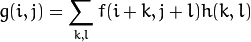

彩色图像灰度化的一般方法是对RGB三个通道分别乘一个颜色系数。
本Demo引用了OpenCV中的颜色系数，转换公式如下：

直方图均衡化的本质是图像的灰度映射。
一般方法可归结为：
本Demo采用的灰度映射关系为 Gray -> floor[(L - 1)*T(Gray) + 0.5]
其中 L 为灰度的分级数。
而对于彩色图像，处理方案有很多，本Demo采用的是将RGB转为HSV模型，然后对V分量做均衡化，再转换回RGB
图像的缩放就是改变图像的原始尺寸，由于数字图像是离散的，所以缩放的关键就在于补充空间中原先并不存在的像素值。
图像缩放的常用方法有三种：近邻取样法、二次线性插值、三次卷积插值。
将相对坐标距离目标像素最近的点的灰度值赋给目标点。
取向对坐标距离目标像素最近的四个点，对这四个点的灰度值作两次线性的插值。
取向对坐标距离目标像素最近的16个点，对这16个点的灰度值作三次卷积插值。
线性滤波是空域增强的常用方法，这里介绍先行滤波的一般方法以及常见的线性滤波算子。
线性滤波就是将一个图像矩阵与线性算子做卷积。
所谓卷积，就是将落在窗口中的图像块按算子的每个分量作加权均值。
以下是几种常见的线性滤波算子。
与其它算子不同，Kirsch算子有八个模版，分别由下图模版循环转45度得到，结果取其中的最大响应值。
平滑处理，又称为模糊处理，本质同为滤波，这里主要介绍三种常用平滑算法。
最简单，每次取窗口内的像素均值。
常用于处理高斯噪声，算子来自于二维高斯函数。
每次取窗口内像素的中位数，由此得名，主要用于处理椒盐噪声
由于标准的中值平滑算法是基于统计排序的，而排序会消耗大量计算资源，这使得中值平滑在实际应用中会处理得很慢。
为了改进时间复杂度，这里引入了一种新的算法，使用直方图统计代替排序，用直方图修正的方法来减少计算量。
实际使用结果，程序的速度确实得到了显著提升，尤其在处理大模糊半径的时候，运行速度几乎不受半径的影响。
算法的实现可参考Demo中的“快速中值滤波”，原理可以参考Reference中的“中值滤波快速算法”。